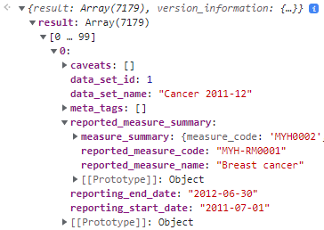
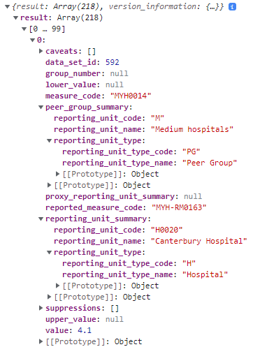

We will first have a look at the datasets that are available. The address is https://myhospitalsapi.aihw.gov.au/api/v1/datasets.
This is what the data looks like in the console (I have collapsed some fields for relevance's sake).

Of particular interest are the reported_measure_names. I have pooled unique values in the textarea here so we can have a look at what's on offer.
Let's say we are looking at metrics relating to childbirth.
Of these reported measures, Childbirth, Caesarean delivery and Vaginal delivery appear of the greatest relevance.
Let's find out the name of the corresponding datasets so we can start exploring their structure.
Here are the data_set_ids associated with these dataset (it seems that each dataset can have multiple IDs).
Hmmm, these datasets seem to be summary datasets. I assume LOS is length of stay, APC is admitted patient care (???) and ADM is admissions.
We will look at LOS 2011-12 as an example. Presumeably, this contains data that pertains to areas outside of childbirth alone, and we will have to extract the relevant information. This data can be found at https://myhospitalsapi.aihw.gov.au/api/v1/datasets/592/data-items. This is what the data looks like in the console (I have collapsed some fields for relevance's sake).

So it seems that each dataset is associated with one measure. In this particular case, this dataset has a measure_code of MYH0014, which corresponds to Average length of overnight stays if we look at the measures API at https://myhospitalsapi.aihw.gov.au/api/v1/measures.
A good place to continue our analysis is to see what sort of measures are available for the datasets relating to childbirth. To do this, we take the above list of data_set_ids and find the associated measure_code and hence the measure_name. Note, there is also reported measures, but we can explore that later as these are a subanalysis of the measures.
Probably not as exciting metrics as we might be hoping to find. We'll entertain it for now.
Moreover, we note that we have access to information about the actual hospital. If we have a look at the actual APIs for the reporting units (hospitals), we can also see some information about the longitude and latitude. However, we will just keep this in the back of our mind for now (may or may not come back to use this data).
Let's just explore a bit more to see the different hospitals that are included in the data that pertains to childbirth.